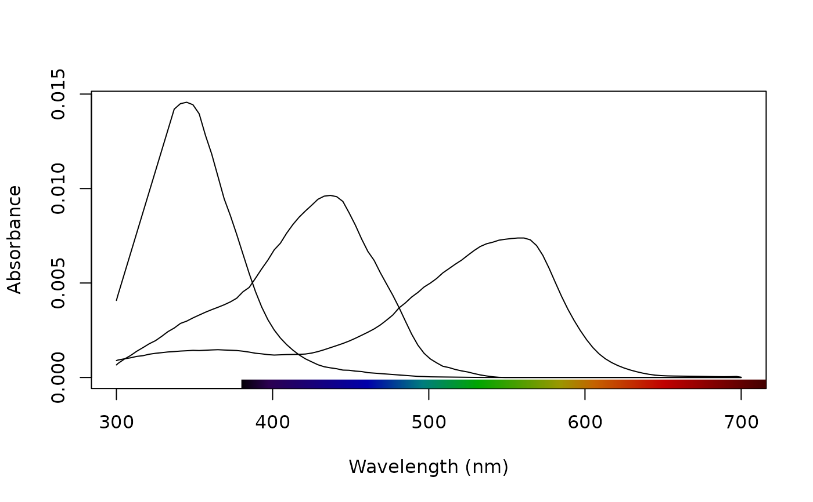
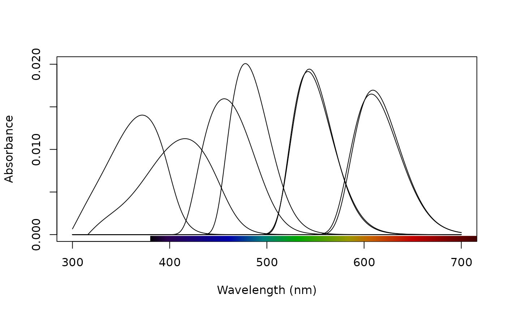

Retrieve (as an rspec object) or plot pavo's in-built spectral sensitivity data.
sensdata(
visual = c("none", "all", "avg.uv", "avg.v", "bluetit", "ctenophorus", "star",
"pfowl", "apis", "canis", "cie2", "cie10", "musca", "drosophila", "habronattus",
"rhinecanthus"),
achromatic = c("none", "all", "bt.dc", "ch.dc", "st.dc", "md.r1", "dm.r1", "ra.dc",
"cf.r"),
illum = c("none", "all", "bluesky", "D65", "forestshade"),
trans = c("none", "all", "bluetit", "blackbird"),
bkg = c("none", "all", "green"),
plot = FALSE,
...
)
Arguments
| visual |
visual systems. Options are:
"none": no visual sensitivity data.
"all": all visual sensitivity data.
"apis": Honeybee Apis mellifera visual system.
"avg.uv": average avian UV system.
"avg.v": average avian V system.
"bluetit": Blue tit Cyanistes caeruleus visual system.
"canis": Canid Canis familiaris visual system.
"cie2": 2-degree colour matching functions for CIE models of human
colour vision. Functions are linear transformations of the 2-degree cone fundamentals
of Stockman & Sharpe (2000), as ratified by the CIE (2006).
"cie10": 10-degree colour matching functions for CIE models of human
colour vision. Functions are linear transformations of the 10-degree cone fundamentals
of Stockman & Sharpe (2000), as ratified by the CIE (2006).
"ctenophorus": Ornate dragon lizard Ctenophorus ornatus.
"musca": Housefly Musca domestica visual system.
'drosophila': Vinegar fly Drosophila melanogaster (Sharkey et al. 2020).
"pfowl": Peafowl Pavo cristatus visual system.
"star": Starling Sturnus vulgaris visual system.
"habronattus": Jumping spider Habronattus pyrrithrix.
"rhinecanthus": Triggerfish Rhinecanthus aculeatus.
|
| achromatic |
the sensitivity data used to calculate luminance (achromatic)
receptor stimulation. Options are:
"none": no achromatic sensitivity data.
"all": all achromatic sensitivity data.
"bt.dc": Blue tit Cyanistes caeruleus double cone.
"ch.dc": Chicken Gallus gallus double cone.
"st.dc": Starling Sturnus vulgaris double cone.
"cf.r": Canid Canis familiaris rod
"md.r1": Housefly Musca domestica R1-6 photoreceptor.
'dm.r1': Vinegar fly Drosophila melanogaster R1-6 photoreceptor.
"ra.dc": Triggerfish Rhinecanthus aculeatus double cone.
|
| illum |
illuminants. Options are:
"none": no illuminant data.
"all": all background spectral data.
"bluesky" open blue sky.
"D65": standard daylight.
"forestshade" forest shade.
|
| trans |
Ocular transmission data. Options are:
"none": no transmission data.
"all": all transmission data.
"bluetit": blue tit Cyanistes caeruleus ocular transmission (from Hart et al. 2000).
"blackbird": blackbird Turdus merula ocular transmission (from Hart et al. 2000).
|
| bkg |
background spectra. Options are: |
| plot |
should the spectral data be plotted, or returned instead (defaults to FALSE)? |
| ... |
additional graphical options passed to plot.rspec() when plot = TRUE. |
Value
An object of class rspec (when plot = FALSE), containing
a wavelength column "wl" and spectral data binned at 1 nm intervals from 300-700 nm.
References
Sharkey, C. R., Blanco, J., Leibowitz, M. M., Pinto-Benito, D.,
& Wardill, T. J. (2020). The spectral sensitivity of Drosophila photoreceptors.
Scientific reports, 10(1), 1-13.
Author
Thomas White thomas.white026@gmail.com
Rafael Maia rm72@zips.uakron.edu
Examples
# Plot the honeybee's receptors
sensdata(visual = "apis", ylab = "Absorbance", plot = TRUE)

